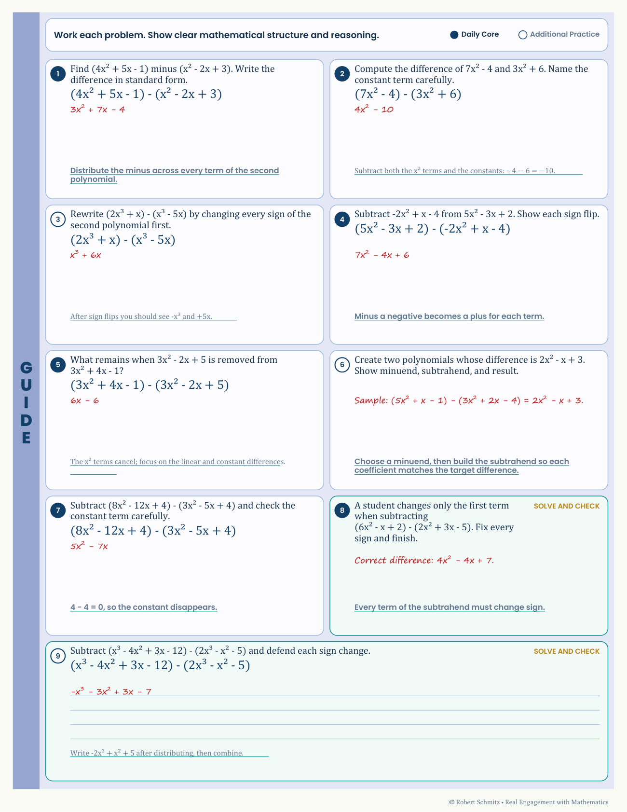

Meet Robert
I design for the learner—and the person helping them succeed.
Teaching secondary and adult learners taught me to look closely at the moment a task stops making sense. I use that perspective to build clear practice, useful feedback, and materials another instructor can confidently pick up and use.
A design habit you can see
Support both sides of the learning experience.
A student needs space to reason. An instructor needs the worked solution and a way to recognize the intended thinking. I build the two together.
Compare the paired materials →
What I design
I begin with the performance learners need to demonstrate: analyze the audience and the standard, write the measurable objective, design the evidence that proves it, then build the instruction. That method has produced standards-aligned items in reusable Canvas banks, a course package adopted district-wide and run by instructors who did not build it, and Real Engagement with Mathematics — a 144-lesson Guided Notes course of student reconstruction pages with fully annotated teacher editions, produced by an engine that resolves a lesson's standards, models, and assets before any page renders.
Every system ships with the facilitation layer someone else needs to run it — worked keys, look-fors, PD. Designing for the deliverer is as much of the job as designing for the learner.
Where the depth comes from
Eleven-plus years teaching secondary and adult mathematics is my analysis phase run live: I can spot the exact step where a learner's route breaks, write distractors that map to real misconceptions, and design feedback that names the error instead of restating the rule.
In my teaching work, state results, district benchmarks, and LMS reporting inform instructional decisions. The independent portfolio concepts are separate: their case studies report production checks and identify learner evaluation that remains to be done.
Two decisions you can inspect
Teach the decision before testing it
In the graphing course, confusing rise and run becomes a worked routine, a practice choice, and an error-analysis task. That sequence lets learners see the move, try it, and diagnose it.
Inspect the three course moments →Design for the person facilitating
The curriculum case pairs student practice with a matching teacher edition. Worked answers make the intended reasoning visible to the instructor as well as the learner.
Compare student and teacher materials →ADDIE gives these decisions a structure: understand the need, plan the evidence, build and deliver the experience, then use evaluation to guide revision. My resume lists the broader methods and tools.
What the public samples demonstrate
The course tour and paired lesson pages show design and production decisions. The experience figures above describe my broader work; these selected samples do not independently establish the full item count or district adoption, and they do not measure learning impact.
What I am looking for
Roles in instructional design, curriculum development, and eLearning — especially in edtech, higher education, and organizational learning — that combine learning strategy, assessment, and polished, accessible delivery.
My process / ADDIE
From the first question
to the next revision.
Analyze, Design, Develop, Implement, Evaluate. I use these five phases to give each design decision a purpose. They form a cycle: testing a draft can change the plan, and learner evidence can reshape the next version.
- 01
Analyze
What needs to change?
I start with what learners need to do, what they already know, and where the task breaks down. Standards, prerequisite skills, likely misconceptions, and the teaching context shape the problem I am solving.
What this producesAudience and task analysis · Standards crosswalk · Misconception map
See the curriculum analysis → - 02
Design
What will show progress?
I define the objective and the evidence of success before choosing the activity. Then I map the sequence: a useful model, supported practice, targeted feedback, and an opportunity to perform independently.
What this producesMeasurable objectives · Assessment plan · Storyboard and feedback paths
Inspect the lesson storyboard → - 03
Develop
What makes the next move clear?
I turn the plan into a working experience: Storyline interactions, printable practice, visual models, and matching teacher support. Characters and props give the activity personality while keeping attention on the learning task.
What this producesWorking course or resource · Visual assets · Student and teacher materials
Compare the paired lesson materials → - 04
Implement
Can someone else run it?
I prepare the experience for the people who will use it. That means considering the course player or print format, the directions and answer keys, and the routines an instructor needs to get learners started.
What this producesDelivery setup · Facilitation directions · Worked keys and job aids
See the support for partner practice → - 05
Evaluate
What should improve next?
I check the mathematics, instructions, feedback, and learner routes as I build. After implementation, I look for evidence of independent performance and use it to revise the experience. Production checks and learner outcomes answer different questions.
What this producesContent and functional checks · Learner performance evidence · Revision priorities
See the course and its evidence status →
What you can inspect here: the public samples show authored materials and the checks documented in each case study. Learner-outcome studies are planned where results have not yet been measured.